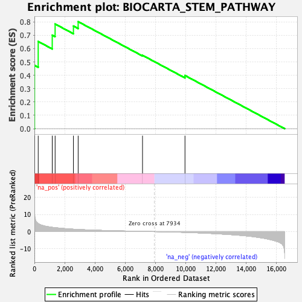

| | | Dataset | DE_genes2 |
| Phenotype | NoPhenotypeAvailable |
| Upregulated in class | na_pos |
| GeneSet | BIOCARTA_STEM_PATHWAY |
| Enrichment Score (ES) | 0.80181247 |
| Normalized Enrichment Score (NES) | 1.8112487 |
| Nominal p-value | 0.0055555557 |
| FDR q-value | 0.10372397 |
| FWER p-Value | 0.32 |
Table: GSEA Results Summary

Fig 1: Enrichment plot: BIOCARTA_STEM_PATHWAY
Profile of the Running ES Score & Positions of GeneSet Members on the Rank Ordered List
| PROBE | GENE SYMBOL | GENE_TITLE | RANK IN GENE LIST | RANK METRIC SCORE | RUNNING ES | CORE ENRICHMENT | | 1 | CSF2 | | | 8 | 11.489 | 0.4749 | Yes |
| 2 | CSF3 | | | 250 | 4.664 | 0.6533 | Yes |
| 3 | IL11 | | | 1177 | 2.497 | 0.7006 | Yes |
| 4 | CXCL8 | | | 1367 | 2.297 | 0.7843 | Yes |
| 5 | IL7 | | | 2577 | 1.400 | 0.7690 | Yes |
| 6 | CD4 | | | 2889 | 1.247 | 0.8018 | Yes |
| 7 | CSF1 | | | 7141 | 0.127 | 0.5498 | No |
| 8 | IL6 | | | 9946 | -0.445 | 0.3985 | No |
Table: GSEA details [plain text format]
Fig 2: BIOCARTA_STEM_PATHWAY: Random ES distribution
Gene set null distribution of ES for BIOCARTA_STEM_PATHWAY